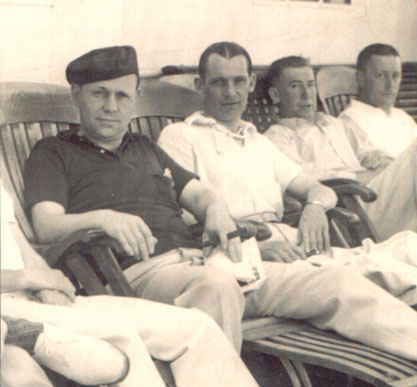

Robert James Craig, Sr.
1898 - 1939
Robert James Craig was born on the 11th of November, 1898 in Syracuse, NY. He married
Kate Phalen
and together they had 4 children. He died in 1939.

Robert (wearing hat) at leisure with friends
Parents:
Robert Craig
Agnes Mullane
Offspring:
Robert James Craig, Jr.
1923 - 1981
Richard Phalen Craig ???? - ?
Kathryn Mary Craig ???? - ?
Dale Edward Craig ???? - ?
References:
1. Virginia Craig
Last Modified: 12 May 2004 by
Bradley Wogsland
.